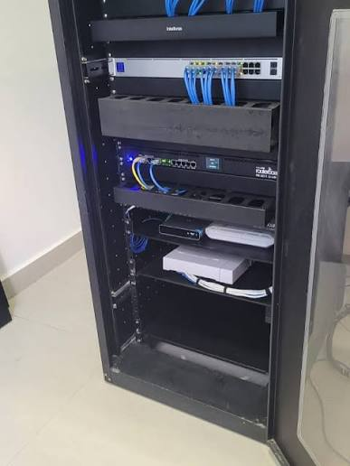
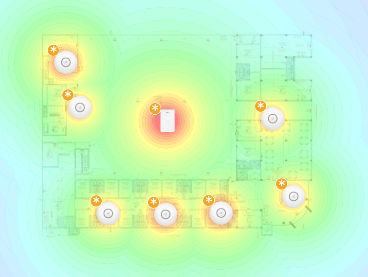
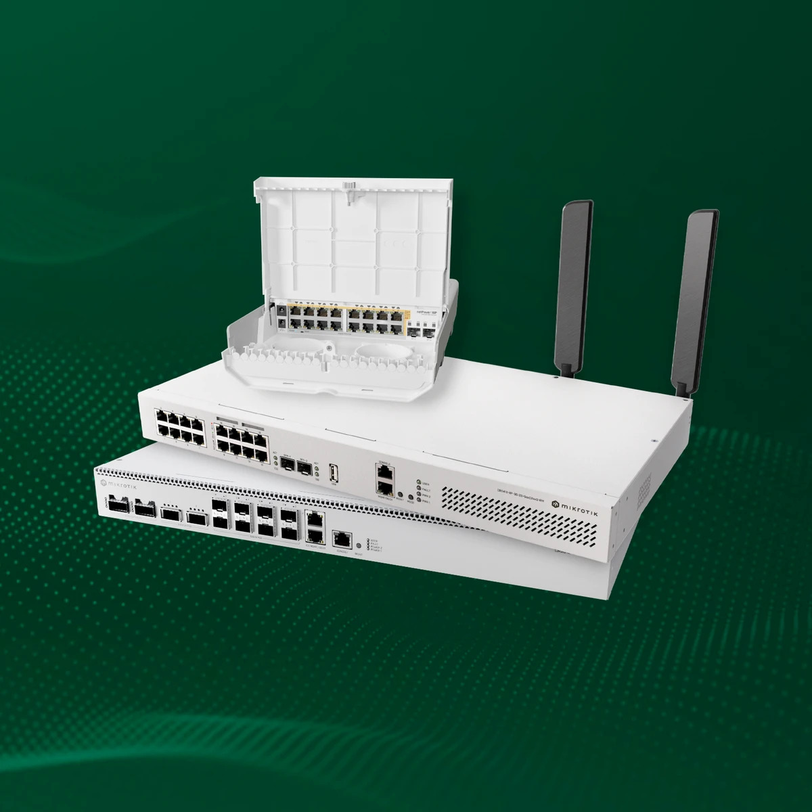
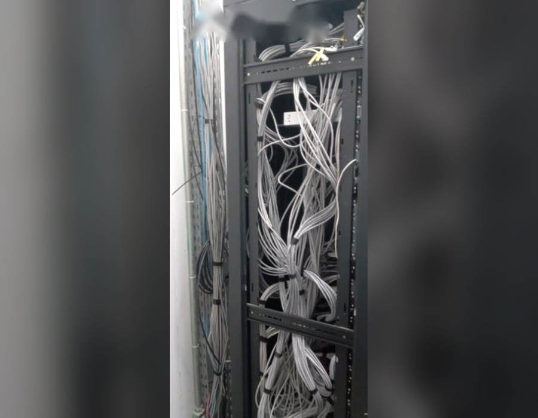
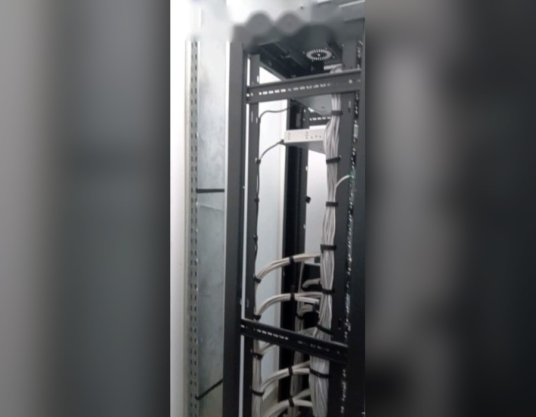

A rede da sua empresa estável, segura e monitorada.
Sem quedas, sem improviso. Projetamos, implantamos e gerenciamos redes corporativas, Wi-Fi profissional, firewall e monitoramento. Um único time técnico cuidando de tudo, do cabo ao equipamento.
Você enxerga a rede antes que ela pare.
Com Zabbix e Grafana, cada link, switch e ponto de acesso gera métricas e alertas. Abaixo, a latência medida agora entre o seu navegador e o nosso site.
Sua latência agora
medindo ao vivoMedindo…
Tempo de ida e volta medido do seu navegador até o servidor deste site a cada 2 s. Não é um ping ICMP: inclui o tempo de resposta HTTP.
Rede corporativa · visão geral
ExemploMarque o que está acontecendo na sua empresa.
Selecione os sintomas e envie direto para o nosso time. Você já chega ao atendimento com o problema explicado, e a gente responde com o caminho para resolver.
0 problemas selecionados
- --Aguardando sintomasAs frentes recomendadas aparecem aqui.
Infraestrutura tratada como prioridade, não como pane.
Rede improvisada custa caro: equipe parada, sistema fora do ar e cliente esperando. Veja a diferença de ter um time cuidando disso.
Sem gestão da rede
- Você só descobre a falha quando alguém reclama
- Cada técnico mexe de um jeito, e ninguém documenta
- Wi-Fi com pontos cegos e quedas em horário de pico
- Rede aberta, sem regras de firewall
- Cabos misturados, rack sem identificação
Com a Conexa Network
- Monitoramento com alertas de indisponibilidade
- Infraestrutura documentada a cada serviço
- Wi-Fi projetado por cobertura, com equipamento profissional
- Firewall configurado e gerenciado
- Cabeamento organizado, identificado e testado
Do primeiro contato à rede resolvida.
Diagnóstico
Avaliamos o ambiente, remoto ou no local, antes de propor qualquer solução.
Projeto
Definimos a solução proporcional ao porte da sua operação.
Implantação
Instalação e configuração com o mínimo de impacto na rotina.
Testes
Validação de cobertura, desempenho e segurança.
Entrega
Ambiente documentado e pronto para o dia a dia.
Um único time para toda a sua infraestrutura.
MikroTik, UniFi, servidores e câmeras. Você não precisa de um fornecedor para cada coisa.
Sua rede pode funcionar de verdade. Vamos começar pelo diagnóstico?
Falar com especialistaCada serviço atua em uma camada da rede.
Passe o cursor (ou toque) em um serviço para ver em quais camadas do modelo OSI ele trabalha.
Não encontrou o que precisa? Pergunte ao time.
Do cabo ao equipamento, tudo pensado para funcionar.
Ambientes reais montados pela equipe da Conexa Network.





Como uma rede corporativa é montada.
Modelo de topologia que usamos em empresas: dois links de internet, firewall MikroTik, switch central, VLANs separadas e Wi-Fi UniFi. Arraste para girar, clique nos equipamentos e simule a queda de um link.
Firewall MikroTik
Porta de entrada da rede. Aplica políticas de acesso, bloqueios, VPN para usuários e decide por qual link o tráfego sai.
Topologia ilustrativa. Cada projeto é dimensionado a partir do diagnóstico.
Escolha o nível de acompanhamento da sua rede.
Cada proposta é montada para o tamanho da sua operação. Fale com o time e receba a sua.
Não sabe qual escolher? Fale com o time e indicamos o plano certo.
Falar com o timeUm único time para toda a sua infraestrutura.
São mais de seis anos de experiência em redes de provedores e empresas, com especialistas dedicados à sua rede.
Atendemos empresas em Rondônia com suporte remoto imediato e visita técnica agendada. O mesmo time cuida do cabo, do Wi-Fi, do firewall, dos servidores, das câmeras e do monitoramento.
Diagnóstico antes de qualquer proposta
Primeiro entendemos a rede. Depois propomos o que ela precisa.
Solução documentada
Infraestrutura documentada a cada serviço. A rede deixa de depender da memória de uma pessoa.
Retorno em até 24h úteis
Remoto quando resolve, presencial quando precisa.
Perguntas que a gente sempre recebe.
Vocês atendem empresas de qualquer porte?
Sim. Atendemos desde pequenos escritórios até empresas com infraestrutura mais robusta, sempre com solução proporcional ao porte do negócio.
O atendimento remoto resolve a maioria dos casos?
Muitos problemas de configuração e suporte são resolvidos remotamente. Quando o caso exige presença física, como cabeamento ou instalação de câmeras, agendamos a visita.
Vocês trabalham com contrato de manutenção mensal?
Sim. Montamos um plano de acompanhamento contínuo sob medida para a rotina da sua empresa. Fale com a gente para receber uma proposta.
Quais marcas de equipamento vocês configuram?
Trabalhamos principalmente com MikroTik e UniFi (Ubiquiti), além de câmeras IP e servidores de diferentes fabricantes.
Vocês fazem diagnóstico antes de enviar proposta?
Sim. O diagnóstico vem antes de qualquer proposta, para que a solução seja proporcional à sua operação.
Como funciona a internet sem parada?
Usamos mais de um link de internet com failover e balanceamento. Se um link cai, o tráfego passa automaticamente para o outro. Veja a simulação na página Projetos.
Que ferramentas vocês usam no monitoramento?
Zabbix e Grafana, com alertas de indisponibilidade e relatórios mensais.
Sua rede pode funcionar de verdade. Vamos começar pelo diagnóstico?
Preencha os dados e a conversa já abre no WhatsApp com tudo explicado. Se preferir, use os contatos ao lado.